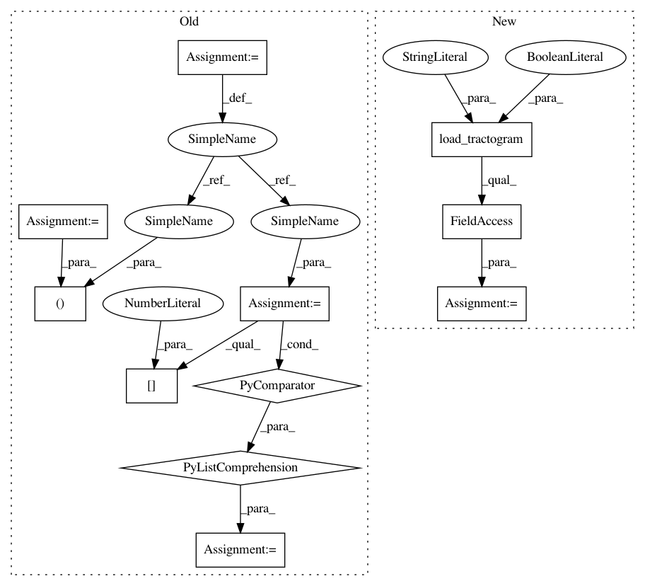

6ea94ab139681914fa165403a283c3b0d08b783b,doc/examples/segment_clustering_metrics.py,,get_streamlines,#,23
Before Change
from dipy.data import get_fnames
fname = get_fnames("fornix")
streams, hdr = tv.read(fname)
streamlines = [i[0] for i in streams]
return streamlines
.. _clustering-examples-AveragePointwiseEuclideanMetric:
After Change
from dipy.tracking.streamline import Streamlines
fname = get_fnames("fornix")
fornix = load_tractogram(fname, "same",
bbox_valid_check=False).streamlines
streamlines = Streamlines(fornix)
return streamlines
In pattern: SUPERPATTERN
Frequency: 5
Non-data size: 11
Instances
Project Name: nipy/dipy
Commit Name: 6ea94ab139681914fa165403a283c3b0d08b783b
Time: 2019-07-30
Author: skab12@gmail.com
File Name: doc/examples/segment_clustering_metrics.py
Class Name:
Method Name: get_streamlines
Project Name: nipy/dipy
Commit Name: 8a0947deef6c5b5eef6b76460237a1c5103eab35
Time: 2019-07-25
Author: francois.m.rheault@usherbrooke
File Name: dipy/workflows/tests/test_segment.py
Class Name:
Method Name: test_recobundles_flow
Project Name: nipy/dipy
Commit Name: 6ea94ab139681914fa165403a283c3b0d08b783b
Time: 2019-07-30
Author: skab12@gmail.com
File Name: doc/examples/segment_clustering_features.py
Class Name:
Method Name: get_streamlines
Project Name: nipy/dipy
Commit Name: 6ea94ab139681914fa165403a283c3b0d08b783b
Time: 2019-07-30
Author: skab12@gmail.com
File Name: dipy/segment/tests/test_bundles.py
Class Name:
Method Name: setup_module
Project Name: nipy/dipy
Commit Name: 6ea94ab139681914fa165403a283c3b0d08b783b
Time: 2019-07-30
Author: skab12@gmail.com
File Name: dipy/align/tests/test_whole_brain_slr.py
Class Name:
Method Name: test_whole_brain_slr